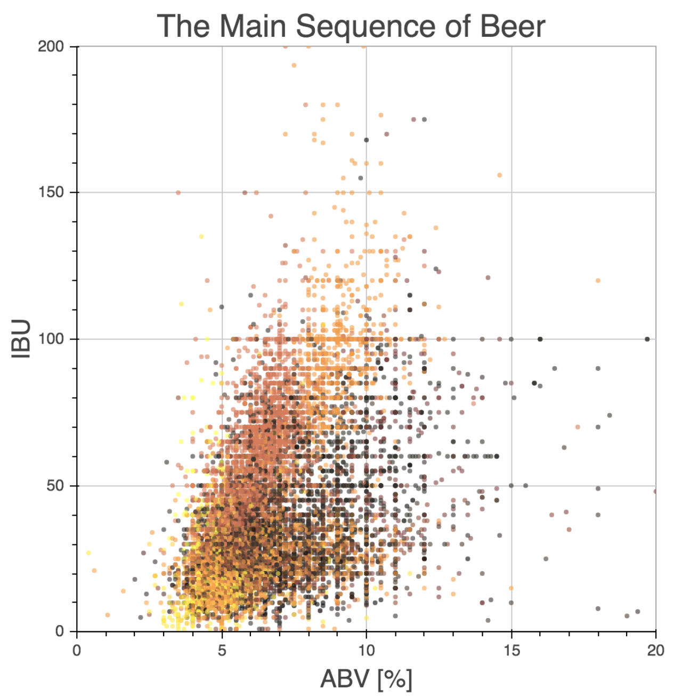

Data visualization lies at the rich intersection of art and science; data and analysis; observation and theory. It is the medium through which our dense numerical results tell impactful stories.
When debugging code, I like to say that A plot is worth a thousand print statements.
Earth Though a Lunar Month
What does the Earth look like from the moon?
In this simulation by Eddie Schwieterman, we use the VPL 3D Spectral Earth Model from Robinson at al. (2011) to calculate the disk-integrated light reflected off of the Earth, as seen from the perspective of an observer on the moon. Both panels show the intensity of Earth's reflected light (flux), but the left panel is shown as a function of time, and the right panel as a function of wavelength.
In a single month (actually 28 days), the moon orbits Earth once and as a result we see the moon pass through all of the phases that we are accustomed to seeing. But from the moon's perspective, Earth too goes through all phases. This 28 day simulation contains the full phase evolution of the Earth (large peaking trend in the right panel), as well as the daily modulation caused by oceans and contenients rotating in-and-out of view (periodic bumps and wiggles in the right panel).
The rich spectral and temporal complexity of the Earth captured in this simulation allows us to study the Earth as if it were an extrasolar planet orbiting a nearby star. By studying the Earth we harpen the techniques used to recognize similar, yet alien worlds.
VPL Spectral Explorer
This is a preliminary view of the new VPL Spectral Explorer. It remains under development. Please contact me with your questions and comments.

ColorTables with Links!
This is a silly example of my ColorTableLinks code that sources random words from the dictionary. Each square can be clicked to link to another website. I recommend opening each link in a new tab or viewing the non-embedded SVG file. In this case, it links to Google searches for the two words on the x- and y-axes. For practical purposes, one may want to link to another plot that supports or explains the value given in the corresponding grid cell. Stay tuned a practical example! :)
{kind=link}
The Main Sequence of Beer
 Where does your personal taste for beer fall on the spectrum of all beers?
Well there are only a few numerical quantities associated with beer to use for data visualization. For this visualization, I plotted the International Bitterness Units (IBUs) against the Alcohol by Volume (ABV), with points colored by the approximate beer color (data from BreweryDB). The result is what I call The Main Sequence of Beer, a callback to the Stellar Main Sequence in Astronomy. Click on the static version of the graph on the right to take you to the full interactive version. Hover your mouse over individual points to see the name of the beer, and click the points to link to the brewerydb.com website for the selected beer(s). Use the tabs along the top to show only specific types of beers.
In terms of trends, there tends to be a natural linear relationship between beer bitterness and alcohol strength: beer tends to get more bitter the stronger the ABV. However, the slope of the linear relationship depends on the type of beer: IPAs tend to become significantly more bitter the stronger they are (steep slope), while Belgian-style beers can be quite strong indeed, but (generally) never get too bitter (shallow slope).
Can you place your own taste for beer on this plot?